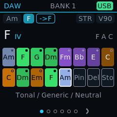
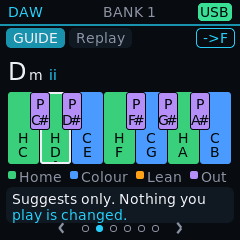

DAW manual · Live · The keyboard's own features
15 Harmony Helper
A chord partner on the pads. It names the chords you play, lights the pads with the chords that tend to come next, coloured by how well they fit, and shows which notes fit over the chord that is sounding. It makes MIDI notes only: record them in your DAW like any other notes.
Download the Live PDF PDF, 0.5 MB
On, off, and what it takes over
- Hold PATCH (half a second) to switch it on or off. PATCH is lit while it is on.
- Tap PATCH to open its Setup list.
While it is on, pads 1-16 of pad bank A belong to the helper and its screen replaces the DAW view. Pad bank B still controls the DAW's tracks, the faders still mix, and Left / Right walk the helper's pages instead of the device pages. Hold PATCH again to give everything back; every note it held is released.

The pads
| Pads | What they play |
|---|---|
| 1 | The same chord again |
| 2-8 | The seven best next chords after the one you played, best first. Before any chord: the home chord and good ways to start |
| 9-12 | The first four chords of your scale, I ii iii IV (C Dm Em F in C major). Hold Oct-: V vi vii° I |
| 13 | The anchor chord, a stable reference |
| 14 PIN | Make the last chord the anchor |
| 15 DEL | Remove the last stored chord |
| 16 STORE | Pin the chord and store it in the Memory |
Colours: green safe, orange explore, violet borrowed from outside the scale but it fits, dark red does not fit (scale row only), pale blue the same chord again, white the chord sounding now. Brighter = ranked higher. Globe → System → Pad Colours → Colour-blind switches to blue, yellow, magenta and dark.
Hold a pad for a quarter of a second to see why it fits (with Setup → Why Popup → Hold). Chords you play on the keys are named too, including odd ones and slash chords.
The six pages
Right and Left walk Play → Notes → Memory → Tuning → Bass → Setup and wrap around. On the list pages K1 picks a row, K2 changes it, K3 pages. The pads play on every page.
| Page | What it is for |
|---|---|
| Play (home) | K1 Suggest (Safe, Tonal, Bold), K2 Genre (39 genres; a card shows its typical moves), K3 Mood, K4 Chord Size, K5 Strum and K6 Humanize (stored, not applied yet), K7 Velocity, K8 Octave |
| Notes | The twelve notes as piano keys coloured by their job over the current chord: H Home (green), C Colour (blue), L Lean, wants to resolve (orange), P Passing (grey), Out of scale (violet). Held keys get a white outline |
| Memory | Up to 8 stored chords, each ½, 1 or 2 bars (K2). SEQ PLAY here replays the progression in a loop |
| Tuning | Velocity, Level, Chord Size, Chord Shape (Close, Open, Rootless A / B, Quartal), Spread, Voice Lead, Octave |
| Bass | A bass line on its own MIDI channel: Off, Root, or Pattern (follows the clock), with a style, lowest note, approach notes and pedal |
| Setup | Suggest, Genre, Mood, Follow (keys, pads or both), Scale Detect (Off, Ask, Auto), Advance, Why Popup, Note Context |

A first session in your DAW
- Set the scale with SCALE (K1 base note, K2 scale). Hold PATCH.
- In the DAW, give the pad channel an instrument track with a sound you like (with USB Ports: Split, put the Pads port on it).
- Play pad 9 (the I chord). The green pads on the top row are safe next chords; play one. When you like a chord, press STORE (pad 16). Store four.
- Right to Memory, then SEQ PLAY: the four chords loop. Arm the track in the DAW and record them; to record in time with the DAW's transport, start recording there first.
- Left to Notes and play a melody on the keys over the loop: green notes on strong beats.
- On Tuning, try Chord Shape: Rootless A with the Bass page on Root, and give the bass channel its own bass track.
Scales shared with the DAW
The helper and the keyboard's Scale mode use one scale.
Live 12's song scale is sent to the keyboard whenever it changes, so the helper and Scale mode follow the scale you set in Live. With Scale Detect: Ask the helper may offer a better-fitting scale after a few chords: Right switches, Left keeps yours.
Limits
- Not yet run on a keyboard: the helper, its replay and bass assist were tested on a computer only.
- The Memory is lost at restart and cannot be sent to the sequencer yet.
- Strum and Humanize are stored but do not change the notes yet. Rootless shapes need the bass assist on.